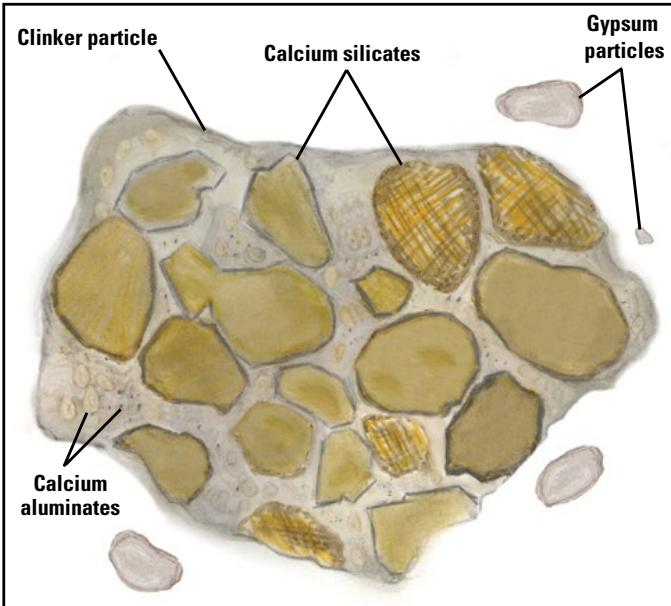
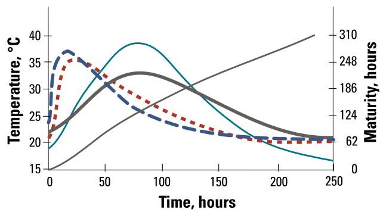
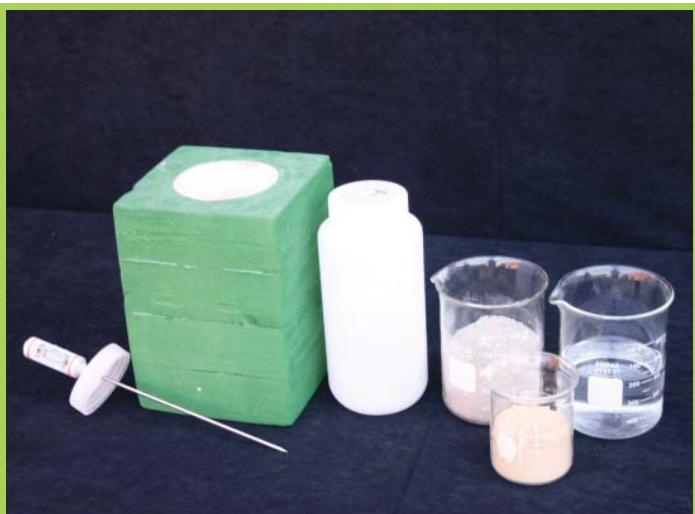
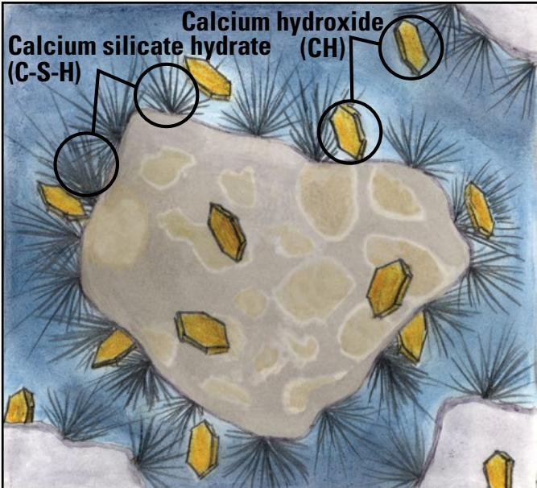
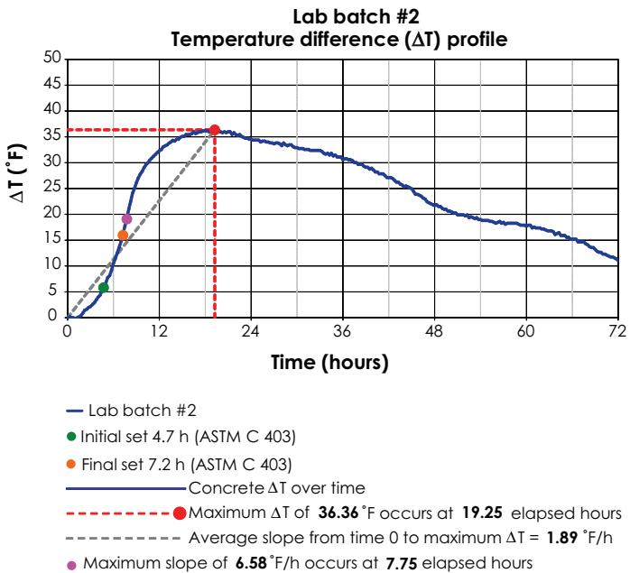
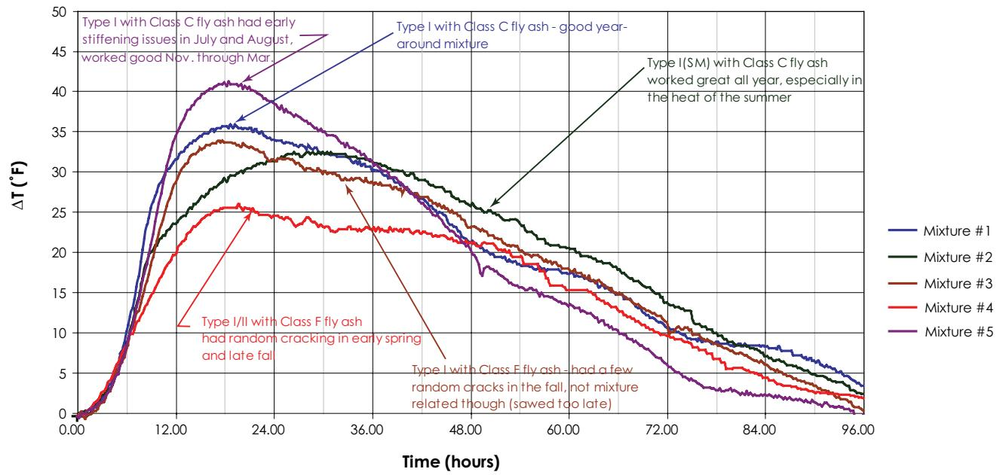

Cement Hydration Heat Evolution
Cement hydration heat evolution is the exothermic energy released when Portland cement particles react with water during the five‑stage hydration process, producing a measurable temperature rise in the fresh paste that drives the transition from fluid mix to a stiffening, hardening mass and provides rapid early‑strength development for pavement opening [2][13]. The magnitude and timing of this heat are governed by the binder’s chemical makeup (alite, belite, aluminate, ferrite and gypsum), particle fineness, supplementary cementitious materials and admixture interactions, which together shape the characteristic temperature‑time curve—or heat signature—recorded by semi‑adiabatic calorimetry [2][14]. Monitoring this heat signature serves as a primary quality‑control tool, enabling engineers to estimate degree of hydration, detect material incompatibilities, and manage peak temperatures to mitigate thermal cracking and ensure durable concrete performance [2][13][14].
Sources (14)
Material purpose and applicability
Cement hydration heat evolution is the exothermic energy released when Portland cement particles react with water during the five‑stage hydration process. Hydration of portland cement is a series of chemical reactions that release heat, A large amount of heat energy is released in these reactions, causing the mixture temperature to begin rising quickly while setting begins. This temperature rise drives the transition from a fluid paste to a stiffening, hardening mass, providing rapid early‑strength development that allows pavement slabs to support traffic soon after placement. Chemical reactions at various stages of hydration have important implications for pavement construction practices, including placement, curing, sawing joints, and opening to traffic, Monitoring the temperature over time is a useful means of estimating the degree of hydration of the system, controlling the rate and magnitude of heat evolution is a primary quality‑control tool The benefit of a lower heat of hydration is to reduce thermal shrinkage and the possibility of resultant cracking. Cement hydration heat evolution is the exothermic energy released as cement reacts with water, and it is quantified in the lab by semi‑adiabatic calorimetry. In a pavement system this measurement provides the concrete’s setting time information and reveals any material incompatibilities, which are critical for scheduling placement, finishing and subsequent traffic loading phases. Cement hydration heat evolution is the exothermic energy released as cement particles react with water during setting. The generated heat raises the mixture temperature, which speeds up the reaction rate; in cool weather this self‑heating can be beneficial by accelerating strength gain, while in warm weather lower heat release helps keep peak temperatures down and improves concrete quality. Temperature differentials of concrete between that at the time of setting and the minimum in the first few days may lead to thermal cracking. Supplementary cementitious materials such as slag or fly ash are often used to reduce the heat generated and mitigate these risks. Cement hydration heat evolution is the exothermic release of heat that occurs when a cementitious paste chemically reacts with water during setting. It is also described as the heat released as Portland cement and any supplementary cementitious materials react with water, recorded as a heat signature that tracks this release over time. By measuring this heat output from paste mixtures made with project‑specific materials, engineers can detect any alterations in the cementitious constituents and thus verify that the material will perform as intended within the pavement system. Monitoring the heat signature lets engineers spot variations in cement chemistry, dosage or admixture interactions that can influence how quickly the concrete gains strength and when pavement sections can be sawed for joints, thereby supporting construction scheduling and quality control. [2][3][13][14]
The figure below illustrates how this heat evolution varies across different hydration stages, specifically highlighting that no heat is generated during the dormancy period.
 Heat evolution curve showing the dormancy stage of cement hydration. [2]
Heat evolution curve showing the dormancy stage of cement hydration. [2]
The figure displays a plot with ‘Time’ on the horizontal axis and ‘Heat’ on the vertical axis, illustrating the exothermic energy released during cement hydration. A distinct initial phase is labeled as “Dormancy,” where the heat curve remains low before rising significantly to a peak and then declining. The concrete does not generate heat during the dormancy stage, which allows time for transport and placement before setting begins.
[2] — Ch. 3 (pp. 115–142), Ch. 6 (pp. 157–160), Ch. 9 (p. 285); [3] — App. A (p. 369); [13] — Heat of Hydration (p. 11); [14] — Ch. 7 (pp. 74–82)
Composition and characteristics
The heat released during cement hydration is fundamentally defined by the chemical makeup of the binder and its physical form. As stated, “Portland cement is built from the oxides calcium oxide (C), silicon dioxide (S), aluminum oxide (A), ferric oxide (F) and magnesium oxide (M) that form the principal calcium‑based phase groups: silicates (alite C₃S and belite C₂S), aluminates (tricalcium aluminate C₃A and ferrite C₄AF) and sulfates supplied by gypsum.” The overall heat output is further controlled by the type of cement and any supplementary cementitious materials; “Cement hydration releases heat, and the amount generated is governed by the cement type and any supplementary cementitious materials present; their alkali content and particle fineness modulate the rate and magnitude of temperature rise.” Consequently, the primary physical indicator of this process is the temperature increase of the fresh paste, most commonly expressed as an adiabatic temperature rise: “The defining physical characteristic of heat evolution is the temperature increase of the fresh paste, most commonly expressed as the adiabatic temperature rise measured under insulated conditions.” [2][13][14]
The following figure illustrates the composition of portland cement.

Microscopic view of the mineralogical composition of Portland cement particles. [2]The figure displays a micrograph of a composite particle, identifying distinct phases including calcium silicates, calcium aluminates, and gypsum.
[2] — Ch. 3 (pp. 74–142), Ch. 6 (pp. 158–160), Ch. 10 (pp. 321–322); [13] — Heat of Hydration (p. 11); [14] — Ch. 7 (pp. 74–82)
The guides concur that any alteration in cement composition, source, processing or proportioning translates directly into a measurable shift in the heat‑of‑hydration profile. Adjustments such as raising C₃S at the expense of C₂S increase early silicate reaction rates and lift the peak temperature, while higher C₃A without adequate calcium sulfate provokes an uncontrolled aluminate reaction that releases large heat bursts; sufficient CS¯ forms ettringite and creates a low‑heat dormant period. Gypsum addition “coats … slows the aluminate reactions almost as soon as they start, reducing the amount of heat generated”, thereby tempering flash set and lowering early‑age temperature rise. Blending supplementary cementitious materials (SCMs) at the plant allows the chemistry to be “carefully and deliberately balanced” into low‑heat (LH) or moderate‑heat (MH) products, which generally reduces peak temperatures; however, silica fume is an exception that can increase heat output. Slag cements and Class F fly ashes are effective at reducing peak temperatures in mass‑concrete systems, whereas finer ground slag cement generated more heat than the lower grade coarse product, illustrating the influence of fineness. Across sources, finer grinding enlarges the specific surface area, which speeds up dissolution and raises the rate at which heat appears, even though the total heat of reaction remains essentially unchanged; consequently high‑early‑strength Type III cements, finer grindings, or low gypsum/CS¯ levels increase both magnitude and rate of early heat release, while coarser cements, lower C₃A blends, and pozzolanic SCMs mitigate peak temperatures and reduce cracking risk. The guides stress that blend ratios must remain within calibrated tolerances and that semi‑adiabatic calorimetry should be performed on the final proportions rather than on isolated components—“Conduct calorimetry on samples of the cementitious system on delivery and note changes in the shape of the curve.” Monitoring heat evolution from cementitious paste mixtures—“Cementitious paste mixtures generate heat as they hydrate”—enables detection of compositional deviations, which can affect strength development rate and construction timing; “monitoring the heat generated by paste mixtures prepared from project materials can identify whether changes in the cementitious materials have occurred,” and such changes may be flagged by the heat signature, potentially impacting strength development and proper saw‑cut timing. [2][13][14]
The following figure illustrates how the reactions of C₃A and calcium sulfate in solution drive the early heat spike observed during cement hydration.
 Heat evolution curve showing the initial aluminate reaction spike and subsequent dormant period. [2]
Heat evolution curve showing the initial aluminate reaction spike and subsequent dormant period. [2]
The figure displays a semi-adiabatic calorimetry plot where heat release is tracked over time, featuring an immediate vertical spike followed by a prolonged low-energy plateau known as the dormant period. This specific phase of cement hydration heat evolution occurs because aluminate reacts with sulfate to form ettringite, which coats the grains and slows further reactions. The resulting low heat generation during this period provides a window for transporting and finishing concrete before the main hydration peaks occur.
[2] — Ch. 3 (pp. 74–142), Ch. 6 (pp. 158–160); [13] — Heat of Hydration (p. 11), Quality Control (p. 24); [14] — Ch. 7 (pp. 74–82)
Key material properties
The guides agree that cement hydration heat evolution is controlled by four categories of properties:
Chemical: “Chemically, the binder’s makeup—alite (C₃S), belite (C₂S), aluminate (C₃A) and ferrite (C₄AF) together with gypsum—determines which reactions occur and when heat is released; control of C₃A by gypsum and achievement of calcium‑ion supersaturation are critical for timing the heat output.” In addition, “Chemical factors—namely the type and dosage of Portland cement, any supplementary cementitious materials, and interactions with chemical admixtures—determine the shape of the heat signature.”
Physical: “Physically, particle fineness governs the specific surface area available for dissolution, and finer particles ‘finer particles have greater specific surface area and therefore hydrate and gain strength more quickly’.” The guides also note that “Key physical factors such as the fineness of the binder … finer slag particles produce more heat than coarser ones” and that “aggregate moisture content must be controlled because variations in water content alter the amount of free water that participates in the exothermic hydration reactions.”
Mechanical: “Mechanically, the progression from plastic paste to a rigid solid is reflected in stiffness development and set resistance; ‘Mechanically, the development of stiffness and strength is tracked through penetration resistance (500 lb/in² for early set, 4,000 lb/in² for final set)’.” Although “Physical and mechanical characteristics are not directly assessed by the heat‑evolution test; however, they influence overall mix stability and risk of thermal cracking,” they remain relevant to performance.
Thermal: “The fundamental thermal property is the amount of heat released as the paste hydrates, captured as a temperature rise (ΔT = Tn - T0) over time.” Important indicators are listed as “maximum temperature reached, the elapsed time to that peak, the steepest rate of temperature increase (maximum slope between two successive measurements), and the average slope from start to peak.” The guides further state that “Thermally, the exothermic reactions generate a temperature rise that must be measured under insulated conditions so that ‘Chemical reactions that occur as concrete hardens emit heat (heat of hydration), and this thermal increase is captured only when the specimen is physically insulated from external temperature influences so that sensors can record an accurate adiabatic heat‑signature.’” Moreover, “Performance of cement hydration heat evolution is governed primarily by the thermal state of the fresh mix and the water available for reaction,” and “The thermal performance of cement hydration is governed by the amount of heat released… leads to higher peak temperatures and potential thermal cracking when excessive.” Managing “heat evolution, peak temperature, and early‑age temperature differentials” is therefore essential.
Together, these properties dictate the shape and magnitude of the calorimetric time‑heat curve and thus control early strength development, durability, and construction scheduling. [2][3][13][14]
The following figure illustrates typical heat signature samples that visualize this evolution.

Heat signature sample plots showing temperature and maturity over time. [2]The figure displays a graph of Temperature versus Time, featuring multiple curves that represent different heat signatures for cement hydration. Plotting multiple samples on the same chart may reveal differences in the mix’s chemistry.
[2] — Ch. 3 (pp. 74–142), Ch. 6 (pp. 157–160), Ch. 9 (p. 285), Ch. 10 (pp. 321–322); [3] — App. A (p. 369); [13] — Heat of Hydration (p. 11); [14] — Ch. 7 (pp. 74–83)
The properties of cement hydration heat evolution are measured by monitoring the temperature change of a small insulated specimen with a calorimeter (or in sealed, insulated containers for semi‑adiabatic tests). The guides employ semi‑adiabatic calorimetry on fresh concrete, tracking the temperature rise of a sealed specimen to determine both the rate and total amount of heat evolved. In practice a temperature‑time curve is recorded—often beginning with a measurement at two minutes after mixing and continuing at one‑minute intervals up to eleven minutes—to produce a thermal profile that can be plotted as ΔT versus time, yielding the mixture’s heat‑signature curve. From this curve the onset of setting may be identified (commonly when the temperature has risen 20 % of the total rise), and quantitative properties such as the peak temperature (Imax) and its elapsed time, the maximum instantaneous rate of temperature rise (the greatest slope between successive measurements), and the overall average slope from minimum to maximum temperature are extracted. The shape of the heat‑evolution curve—its rate of rise, peak magnitude and overall form—is examined for the characteristic five‑stage profile that reflects silicate reaction progress. Based on these curves the cement is classified by heat output—low‑heat (LH) or moderate‑heat (MH)—as defined in ASTM C595/C595M and AASHTO M 240, with classification also considering cement type (e.g., Type III releases heat more rapidly than Type I), particle fineness (finer cements accelerate the rate of heat generation), and the presence of supplementary cementitious materials, which modify the peak temperature according to binder type (slag cements and Class F fly ash lower the peak, whereas silica fume raises it) and their fineness. Deviations in the curve shape serve as an early flag that material characteristics have changed, prompting further investigation. [2][3][13][14]
The following figure illustrates the specific equipment and materials used to conduct these cementitious heat generation tests.

Cementitious heat generation test equipment and materials [14]The image displays the apparatus for a semi-adiabatic calorimetry test, featuring a green insulated container designed to minimize heat loss.
[2] — Ch. 3 (pp. 74–137), Ch. 6 (pp. 157–160), Ch. 9 (p. 285); [3] — App. A (p. 369); [13] — Heat of Hydration (p. 11), Quality Control (p. 24); [14] — Ch. 7 (pp. 74–83)
Behavior and mechanisms
Cement hydration releases heat as soon as water becomes supersaturated with calcium ions, causing the paste to stiffen. The magnitude and timing of this exothermic reaction are tightly linked to moisture retention: loss of water halts further hydration and lowers both strength and durability, while retaining internal heat sustains the reaction. Early heat generation is dominated by the rapid dissolution of C₃S (alite), which produces a sharp temperature rise before slower‑reacting C₂S contributes; consequently, finer cements with greater surface area evolve more heat than coarser mixes. Temperature influences both rate and total heat—higher ambient or mix temperatures accelerate hydration and increase peak heat, whereas cooling the materials or working at night reduces the reaction rate, leading to delayed setting and lower heat output. Chemical admixtures also modify heat evolution: retarders and certain water‑reducing agents can produce clear retardation and low heat output, shifting the temperature profile and slowing strength development. The sources do not report any direct effect of external mechanical loading or aggressive chemical exposure on the heat‑evolution behavior; thus, under service conditions, moisture availability, mix fineness, ambient temperature, and admixture chemistry are the primary controls. [2]
The following figure illustrates how these hydration dynamics influence the properties of hardened concrete.
 A schematic diagram illustrating the five stages of cement hydration and their specific implications for the stability and formation of the air-void system in concrete. [2]
A schematic diagram illustrating the five stages of cement hydration and their specific implications for the stability and formation of the air-void system in concrete. [2]
The figure displays a temperature-time curve divided into five distinct phases: Mixing, Dormancy, Hardening, Cooling, and Densification. Text boxes associated with the first three stages describe how factors such as high temperature, low slump, and chemical admixtures affect the stability of the air-void system during the initial hydration process.
[2] — Ch. 3 (pp. 117–142)
Cement‑hydration heat evolution is governed by intertwined chemical, physical and mechanical mechanisms. Chemically, “The primary chemical mechanism driving heat evolution is the exothermic hydration reaction between cement and water, which releases thermal energy as the concrete sets.” The rapid aluminate reaction – “C3A reacts immediately when exposed to water and can cause early stiffening or flash set” – is moderated by gypsum but still contributes a large portion of early heat. As the pore solution becomes supersaturated, “the calcium ions react with SiO2 in solution and water to form C‑S‑H and CH,” releasing the bulk of the heat later in the process. The overall chemical heat output is also dictated by binder composition: “The amount of heat released during cement hydration is governed primarily by the exothermic chemical reactions of the binder, which are accelerated when the mixture temperature rises, creating a positive thermal feedback.” Supplementary cementitious materials such as slag or Class F fly ash lower the heat, while highly reactive silica fume raises it; their effectiveness depends on alkali content and particle fineness. “Finer ground slag cement generated more heat than the lower grade coarse ground product,” illustrating the role of grinding.
Physically, particle size and surface area dominate the rate: “Finer cement particles increase specific surface area, accelerating dissolution and precipitation rates, thereby amplifying heat output.” The proportion of cement and SCMs sets the amount of reactive material – “Physically, the proportion of cement and SCMs in the mix determines how much reactive material is present, which sets the magnitude of the heat‑signature that can be observed over time.” Higher water‑to‑cement ratios, aggregate gradation and elevated curing temperatures further accelerate ion transport and supersaturation, increasing the rate of heat release. Laboratory measurement isolates this chemical heat by insulating a specimen: “In laboratory practice the temperature rise is isolated by insulating a standard concrete cylinder from ambient fluctuations and measuring the internal ΔT with embedded sensors; this physical control allows the chemical heat generation to be recorded without external influence.”
Mechanically, handling and consolidation affect how uniformly water contacts cement particles: “Mixing and consolidation affect how uniformly cement particles contact water and admixtures; longer mixing improves dispersion and can raise early heat generation.” As hydration proceeds, a stiffening network forms that limits further water access: “The stiffening paste that develops as C‑S‑H/CH networks form mechanically impedes further water access to unhydrated grains, curtailing heat evolution after the peak.” The observed temperature rise also depends on geometry and surface‑to‑volume ratio, which governs heat loss versus generation. While test procedures do not directly capture mechanical effects – “No mechanical mechanisms are identified in the test procedure, indicating that mechanical effects do not directly govern the measured heat evolution” – the guides acknowledge that mixing and paste stiffening are intrinsic mechanical controls on heat evolution. [2][13][14]
The following figure illustrates the formation of C-S-H and CH, which drives the stiffening network described above.

Microstructural formation of C-S-H and CH during cement hydration. [2]The figure depicts a central unhydrated cement particle surrounded by newly formed products, specifically labeled as calcium silicate hydrate (C-S-H) appearing as needle-like structures and calcium hydroxide (CH) as distinct yellow hexagonal crystals. The source context states that a large amount of heat energy is released in these reactions, causing the mixture temperature to begin rising quickly while setting begins.
[2] — Ch. 3 (pp. 74–142), Ch. 6 (pp. 158–160), Ch. 9 (p. 285), Ch. 10 (pp. 321–322); [13] — Heat of Hydration (p. 11); [14] — Ch. 7 (p. 82)
Durability and deterioration
The guides identify several inter‑related deterioration mechanisms that directly affect cement hydration heat evolution. An immediate reaction of tricalcium aluminate (C₃A) with water can cause early stiffening or flash set; “C3A reacts immediately when exposed to water and can cause early stiffening or flash set.” This rapid reaction “generates a large amount of heat and, if uncontrolled by CS¯, will cause fast, permanent hardening. This effect— known as flash set—is very undesirable,” leading to loss of workability and reduced ability to entrain air.
Moisture availability is another critical factor: “If the water is lost, the hydration reaction will not reach completion, reducing the strength and durability of the final concrete product.” Likewise, uncontrolled dissipation of the exothermic heat “will be slowed or will cease,” impeding full strength development.
As hydration proceeds, the accumulation of calcium‑silicate‑hydrate (C‑S‑H) and calcium hydroxide (CH) creates a physical barrier around unhydrated grains. The guides note that “Initially, the C3S reactions are relatively fast. After a few hours, however, the hydration products (C‑S‑H and CH) accumulate to a point at which they interfere with contact between the undissolved cement particles and water, slowing the reactions and thus reducing the heat of hydration.” Dissolution of CH further compromises durability: “CH dissolution leads to an increase in concrete permeability, and the dissolved ions contribute to a number of durability-related issues, including alkali–silica reaction (ASR) and chemical deicer attack.”
Thermal effects generate additional damage pathways. The exothermic nature of hydration causes temperature swings; “Concrete expands with increasing temperature and contracts (shrinks) with decreasing temperature,” and “The risk of cracking is increased with increasing placement temperature.” Temperature gradients between the hot, setting concrete and its later cooling “may lead to thermal cracking”: “Temperature differentials of concrete between that at the time of setting and the minimum in the first few days may lead to thermal cracking.”
Mitigation strategies highlighted across the guides focus on reducing heat output. In warm conditions, lower heat evolution yields lower peak temperatures and better concrete quality: “in warm weather the lower the heat generated the lower the peak temperature and the better quality the concrete will be.” Incorporating supplementary cementitious materials such as slag or Class F fly ash “can curb heat generation, thereby mitigating thermally induced damage.” [2][13]
[2] — Ch. 3 (pp. 117–137), Ch. 6 (p. 158), Ch. 10 (p. 321); [13] — Heat of Hydration (p. 11)
Material characteristics that raise the heat released during cement hydration—such as a high tricalcium aluminate (C₃A) content without enough dissolved calcium sulfate, excessive fineness of cement particles, high alkali levels, or the use of silica fume—increase the susceptibility of concrete to thermal‑related deterioration. The guides note that “To control C3A reactions, the addition of gypsum is critical.” When gypsum (or sufficient CS¯) is lacking, “If there is insufficient CS¯ in solution, the C3A reacts quickly with water to form C-A-H (see Table 5-3).” This rapid reaction accelerates temperature rise and can lead to flash set and thermal cracking, especially under warm exposure conditions. The ternary‑mix manual adds that “Finer ground slag cement generated more heat than the lower grade coarse ground product,” and observes that in hot weather “in warm weather the lower the heat generated the lower the peak temperature,” meaning higher early heat raises peak temperatures and crack risk.
Conversely, characteristics that dampen early heat evolution reduce deterioration potential. Adequate gypsum or other calcium‑sulfate sources create a dormant period that moderates C₃A activity; pozzolanic supplementary cementitious materials with low calcium content (e.g., Class F fly ash) hydrate more slowly and consume free CH, lowering early temperature rise. Coarser cement particles or blended cements such as coarse slag also reduce peak temperatures and promote a denser microstructure over time. Maintaining moisture and internal temperature through proper curing, using a low water‑to‑cement ratio, limiting high‑calcium fly ash replacement levels, delaying admixture addition, or working during cooler periods (e.g., night shifts) further curtails heat buildup. Across the guides, these measures collectively lower the susceptibility of cement hydration heat evolution to deterioration. [2][13]
[2] — Ch. 3 (pp. 117–142); [13] — Heat of Hydration (p. 11)
Material interactions and compatibility
Heat evolution is described as “the engine that drives bond formation between paste and other constituents.” As hydration proceeds, the exothermic reactions generate new solid phases that “cause the plastic cement paste to harden, bond to the aggregate in the concrete mixture, and become strong and dense.” This stiffening reduces aggregate absorption and raises the demand for paste to satisfy moisture needs of aggregates, fibers or soil particles.
Field calorimetry shows that “the heat released during cement hydration is strongly affected … different cements (e.g., high‑early‑strength Type III versus normal Type I) generate markedly different peak temperatures, which in turn control how the fresh paste interacts with surrounding aggregates, soils or fibers.” Higher early‑heat cements accelerate temperature rise, promoting faster nucleation on aggregate surfaces and increasing thermal‑expansion stresses; lower‑heat blends give a slower setting and allow more uniform interaction.
When supplementary cementitious materials such as Class F or Class C fly ash are blended with Portland cement, “their pozzolanic and/or hydraulic reactions work together with the cement’s own chemistry, but they also lower the overall heat released during hydration.” The reduced peak temperature slows the rate at which the paste coats aggregates and fibers, modifies water consumption, and consequently changes aggregate absorption and required paste volume.
“The amount of heat released during cement hydration is strongly affected by the type and fineness of supplementary binders mixed with the cement; slag cement and Class F fly ash lower the peak temperature, which helps prevent thermal cracking in large pours, whereas silica fume raises the heat output.” “Finer grinding of slag increases its reactivity enough to generate more heat than a coarser grade, so the fineness level can shift the balance between accelerating cure in cool weather and limiting temperature rise in warm conditions.” Consequently, selecting SCMs and controlling their particle size allows practitioners to tailor heat evolution to match the surrounding materials and ambient climate, reducing adverse interactions such as excessive aggregate expansion or paste demand.
The “heat‑evolution profile (heat signature) of a concrete mix mirrors how the cement chemistry, the dosage of Portland cement or supplementary cementitious materials, and any chemical admixtures interact; changes in these constituents modify the rate and amount of heat released during hydration, which can affect early strength development and practical construction timing such as saw cutting.” “Heat signature is a representation of the heat of hydration generated by a specific concrete mixture over time,” and variations in chemistry and dosage of Portland cement and SCMs, together with their interactions with admixtures, may be flagged by the heat signature. [2][13][14]
The following figure illustrates an example of such a heat signature curve for a specific mixture design.

Example mixture design heat signature curve [14]The figure displays a heat signature curve where the temperature difference increases over time, reaching a peak before gradually declining as hydration progresses.
[2] — Ch. 3 (pp. 74–142), Ch. 6 (pp. 158–160), Ch. 9 (p. 285), Ch. 10 (p. 321); [13] — Heat of Hydration (p. 11); [14] — Ch. 7 (p. 82)
The guides agree that sulfate levels are a primary source of compatibility risk for cement hydration heat evolution. Insufficient calcium sulfate in a mixture creates a clear risk: C₃A reacts rapidly with water to form C‑A‑H, generating a large amount of heat and causing flash set, an immediate permanent hardening that jeopardizes workability. Conversely, free calcium sulfates present in gypsum‑based cements can trigger steel corrosion in reinforced pavements, also compromising the hydration process. Adjusting sulfate content during plant blending allows manufacturers to optimize sulfate levels and minimize these incompatibilities. Additional risks noted include conversion of calcium aluminate cements, which reduces strength after early gain; coefficient‑of‑thermal‑expansion mismatches of polymer‑based repair concretes with existing concrete that can generate excess heat in deep placements, requiring multiple lifts; and the advantage of calcium sulfoaluminate (CSA) cements, which provide high sulfate resistance and very low shrinkage, thereby reducing shrinkage‑related risks. No specific incompatibilities are identified for organics, clays, reactive aggregates, contaminants, dissimilar materials beyond the polymer mismatch, or chemical attack. [2][8][13]
[2] — Ch. 3 (pp. 127–134); [8] — Ch. 5 (pp. 103–104); [13] — Quality Control (p. 24)
Influence of production and placement
Mixing decisions that set the water‑to‑cement ratio, cement fineness and aggregate gradation dictate how much heat can be released; the text notes that “Many factors, such as actual w/cm ratio, cement fineness, aggregate gradation, consolidation, curing, and environment, strongly influence the performance of a pavement.” Proper mixing therefore controls the initial rate of hydration. During placement the concrete remains plastic and, as stated, “During this time, the concrete is plastic and does not generate heat,” giving a limited window to transport, place and finish before heat generation resumes. Finishing must be completed while the mix is still workable; immediate protection of moisture is critical – “Workers should apply curing compound as soon as possible after finishing to control water evaporation from the concrete surface.” Finally, curing governs the continuation of hydration and the ultimate strength and durability: “Curing—primarily, protecting the concrete from heat and moisture loss—is essential for strong, durable concrete.” By managing these practices, contractors can modulate the timing and magnitude of heat evolution, thereby influencing the final mechanical performance of the hardened concrete. [2]
The following figure illustrates the significant heat generation that occurs once the concrete transitions from its plastic state to the hardening stage.
 Heat evolution curve during the hardening stage of cement hydration. [2]
Heat evolution curve during the hardening stage of cement hydration. [2]
The figure displays a semi-adiabatic calorimetry plot with time on the horizontal axis and heat on the vertical axis, showing a characteristic temperature-time curve that rises to a peak before declining. The rising portion of the curve is highlighted in orange and labeled “Hardening,” indicating the period where hydration products begin forming and heat is generated as the mixture stiffens.
[2] — Ch. 3 (pp. 115–142), Ch. 6 (p. 158)
The guides identify several construction‑introduced variations that dominate long‑term cement hydration heat evolution. Mix proportion errors, such as deviations from the specified water‑to‑cement ratio, changes in cement fineness, and improper aggregate gradation, are highlighted: “Many factors, such as actual w/cm ratio, cement fineness, aggregate gradation, consolidation, curing, and environment, strongly influence the performance of a pavement.” Segregation of materials during mixing is also noted as permanent: “Any segregation of materials during this stage will be permanent.” Temperature conditions at placement are repeatedly cited; high ambient or surface temperatures accelerate reactions and raise cracking risk: “placing concrete at a high temperature raises the rate of cement reactions and increases the risk of thermal cracking” and large early‑age differentials can cause thermal cracking: “Temperature differentials of concrete between that at the time of setting and the minimum in the first few days may lead to thermal cracking.” Insufficient calcium sulfate leads to rapid C3A reaction and flash set, releasing a burst of heat: “If there is insufficient CS¯ in solution, the C3A reacts quickly with water to form C‑A‑H.” and “This reaction generates a large amount of heat and, if uncontrolled by CS¯, will cause fast, permanent hardening.” Inadequate curing or moisture loss halts hydration and reduces long‑term heat output: “Workers should apply curing compound as soon as possible after finishing to control water evaporation from the concrete surface,” “If the water is lost, the hydration reaction will not reach completion, reducing the strength and durability of the final concrete product,” and “Likewise, if the heat from the hydration reactions is lost, the hydration reaction will be slowed or will cease.” Use of calcium aluminate cements introduces a conversion phenomenon that alters the hydration products over time: “undergoes a phenomenon called “conversion,” during which a portion of the concrete strength is lost.” For deep repairs, lift sequencing is required to limit heat buildup: “deep repairs must frequently be placed in multiple lifts to control heat development.” Gypsum‑based cements demand dry placement and free sulfates can promote corrosion: “generally require dry conditions during placement” and “the presence of free sulfates in the typical gypsum mixture may promote steel corrosion.” Binder type and fineness affect peak temperatures; supplementary cementitious materials generally lower heat, while silica fume raises it, and finer slag releases more heat than coarse slag: “Supplementary cementitious materials will generally reduce the heat generated,” “slag cement and fly ash reducing temperatures and silica fume increasing them,” and “Finer ground slag cement generated more heat than the lower grade coarse ground product.” Finally, variations in cement chemistry, SCM dosage, and their interactions with chemical admixtures shift the concrete’s heat signature, influencing strength development: “Variations in the chemistry and dosage of portland cement and supplementary cementitious materials (SCMs),” “interactions between them and chemical admixtures,” and “Changes in the heat signature of a concrete mixture can impact construction issues related to strength development.” [2][8][13][14]
[2] — Ch. 3 (pp. 74–142), Ch. 6 (p. 158), Ch. 10 (p. 321); [8] — Ch. 5 (pp. 103–104); [13] — Heat of Hydration (p. 11); [14] — Ch. 7 (p. 82)
Selection, specification, and improvement
The selection of cement for a given application is driven by a set of performance‑based criteria that together define the required heat‑of‑hydration profile. First, the allowable peak temperature and associated risk of thermal cracking set the thermal envelope; the chosen binder must keep the heat evolution within this limit. Second, projects that demand rapid early strength are matched with cements possessing higher C₃S content and finer particles to generate the necessary early heat. Third, ambient conditions modify the target: in warm weather a lower heat output is preferred to reduce peak temperature and preserve concrete quality, while in cool weather a higher‑heat mix can be advantageous for accelerating strength gain. Fourth, supplementary cementitious materials such as slag cements and Class F fly ashes are employed to moderate the heat signature, especially in mass‑concrete elements where peak temperatures must be limited. Finally, the specified blend is verified through calorimetric testing of delivered material to confirm that the actual heat evolution curve conforms to the design expectations. [2][13][14]
[2] — Ch. 3 (pp. 74–142), Ch. 6 (pp. 158–160), Ch. 9 (p. 285); [13] — Heat of Hydration (p. 11), Quality Control (p. 24); [14] — Ch. 7 (p. 82)
To keep cement‑hydration heat within acceptable limits the guides recommend a coordinated set of material selections, blend strategies, chemical additives, mix‑design tweaks, placement controls, and rigorous quality‑control testing. Selecting a blended cement that carries the low‑heat (LH) or moderate‑heat (MH) suffix is an effective way to control hydration temperature, because the slag, pozzolan or limestone portion of the blend is chosen to lower the heat released during setting. When a dedicated low‑heat cement is unavailable, the same effect can be achieved by pairing an alternative hydraulic cement with the proper amount of certain SCMs, such as Class F fly ash (15–25 % by mass) or ground slag; these materials “generally reduce the heat generated” and have heat‑of‑hydration values roughly 50 % (fly ash) to 80 % (grade 100 slag) of plain Portland cement. The blend proportion should be defined at the plant (“X = targeted percentage of slag, pozzolan, or limestone”) and kept within tolerance; factory blends that comply with ASTM C 595 also reduce onsite silos and improve consistency.
Silica fume is an exception – it tends to increase peak temperatures, so its use should be minimized in mass‑concrete applications. Finer ground slag generates more heat than a coarser grind, therefore selecting a coarser slag product further limits temperature rise. Adjusting clinker chemistry (lower C₃S/C₂S ratio) and using a coarser cement grind (average particle size nearer 15 µm rather than the typical 95 % under 45 µm) also dampens early heat evolution; Type III cements, being finer, generate more heat than Type I.
Chemical control includes adequate gypsum to “slow the aluminate reactions… reducing the amount of heat generated and the potential for flash set,” and the use of retarding admixtures when fine cements or high‑alkali systems are employed. Dosage timing can be modified – delaying admixture addition, changing the type of chemical admixture, or selecting a lower‑calcium fly ash – to spread the heat release over a longer period.
External temperature management (cooling raw materials, night placement, or other cooling methods) further reduces peak concrete temperatures.
Quality‑control testing is central: semi‑adiabatic calorimetry of fresh concrete (“Concrete Hydration (Semi-Adiabatic Calorimetry) – for setting times and potential material incompatibilities”) and isothermal calorimetry (“The energy required to maintain a hydrating paste mixture is monitored in an isothermal calorimeter”) are used to monitor the heat‑energy‑versus‑time curve, flagging any shift in timing or magnitude. Routine concrete temperature measurements establish baseline values for each batch, while aggregate moisture content checks guard against unexpected spikes caused by moisture variations. The guides also stress verification of cement product loading (color‑coded connectors, delivery tickets) and strict calibration of batching equipment. Early‑delivery calorimetry (“Conduct calorimetry on samples of the cementitious system on delivery and note changes in the shape of the curve”) provides a pre‑placement check.
Finally, mix‑design adjustments that vary the chemistry and dosage of Portland cement, SCMs, and admixtures are evaluated through the “heat signature,” which represents the heat of hydration over time; deviations in this signature can indicate potential strength‑development or saw‑timing issues. By integrating these material modifications, additive strategies, design tweaks, placement controls, and calibrated testing procedures, practitioners can reliably improve cement‑hydration heat performance and mitigate cracking risks associated with excessive temperature rise. [2][3][13][14]
The figure below illustrates a qualitative comparison of these heat signature curves during the mixture design stage.

Qualitative comparison of heat signature curves during the mixture design stage [14]The figure displays a semi-adiabatic calorimetry test plotting temperature rise against time for five different concrete mixtures. The annotations indicate that these variations in peak temperature and cooling rates correlate with practical performance issues such as early stiffening, random cracking, or optimal sawcutting windows.
[2] — Ch. 3 (pp. 74–142), Ch. 6 (pp. 157–159); [3] — App. A (p. 369); [13] — Heat of Hydration (p. 11), Quality Control (p. 24); [14] — Ch. 7 (p. 82)
Performance evaluation and implications
The assessment framework distinguishes laboratory, field, and long‑term performance evidence. Laboratory evidence is obtained primarily through calorimetric testing: a small insulated specimen is measured with a calorimeter to produce a time‑heat curve, and semi‑adiabatic temperature measurements monitor the temperature rise in sealed containers. The applicable standard test methods (ASTM C186, ASTM C1064/AASHTO T 309, AASHTO T 336) provide quantitative criteria for heat‑evolution potential. Concrete Hydration (Semi-Adiabatic Calorimetry) – for setting times and potential material incompatibilities; Concrete Temperature – to establish baseline and production values when test specimens prepared (ASTM C1064). Conduct calorimetry on samples of the cementitious system on delivery and note changes in the shape of the curve. Cementitious paste mixtures generate heat as they hydrate, and monitoring the heat generated by paste mixtures prepared from project materials can identify whether changes in the cementitious materials have occurred. Transfer the paste mixture from the mixing bottle to an insulated container and insert a thermometer. Record the temperature of the paste when the timer reaches 2 minutes and continue to record the temperature at one‑minute intervals until the timer reaches 11 minutes (10 temperature readings). By insulating a standard cylinder of concrete from the influence of outside temperatures and using sensors to record the heat generated by the concrete, it is possible to measure the heat signature of a concrete mixture. Place the concrete cylinder(s) in the insulated container and close the container. A chart that plots time on the x‑axis and temperature change on the y‑axis is produced from this data. Field evidence is obtained by embedding temperature sensors (ASTM C1064/AASHTO T 309) in the concrete and monitoring ambient conditions with a portable weather station; these data serve as inputs to FHWA’s HIPERPAV software for predicting pavement temperature profiles and cracking risk. Setting times and bleeding rates should be carefully monitored to note changes that may affect cracking risk. Monitor key parameters provided with delivery tickets where possible. Long‑term performance assessment uses the modeled temperature histories together with observed field temperatures to evaluate early‑age thermal stresses and the potential for later cracking. [2][3][13][14]
The following figure illustrates typical results from a cementitious heat generation test.
 Cementitious heat generation (coffee cup) test results [14]
Cementitious heat generation (coffee cup) test results [14]
Four distinct curves labeled P.C. #1A, P.C. #1B, P.C. #2, and P.C. #3 demonstrate that the shape of the temperature profile varies depending on the specific cementitious material used. Monitoring this heat signature serves as a primary quality-control tool to detect material incompatibilities and identify changes in binder composition that may affect workability or early stiffening.
[2] — Ch. 3 (pp. 115–137), Ch. 6 (pp. 157–160), Ch. 9 (p. 285); [3] — App. A (p. 369); [13] — Heat of Hydration (p. 11), Quality Control (p. 24); [14] — Ch. 7 (pp. 74–83)
The guides describe cement hydration as a series of exothermic reactions that dominate early‑age pavement behavior. “Hydration of portland cement is a series of chemical reactions that release heat,” and during the initial plastic stage “the concrete is plastic and does not generate heat.” Once supersaturation is reached, the released energy raises slab temperature, accelerates C‑S‑H formation and provides the early load‑bearing strength needed for traffic opening. However, “Concrete expands with increasing temperature and contracts (shrinks) with decreasing temperature,” creating thermal gradients that can exceed early‑age strength and cause uncontrolled cracking if joints are not properly spaced or mix design is not adjusted.
The magnitude and timing of heat evolution drive design choices. Fast‑reacting cements such as Type III “Type III cements, which are typically used in applications when high early strength is a goal, generate more heat and at a faster rate than Type I cements.” and finer particles “Finer particles also result in greater heat of hydration.” To limit thermal stresses, the guides recommend low‑heat binders or supplementary cementitious materials: “Supplementary cementitious materials will generally reduce the heat generated, depending on the alkali content and the fineness,” and “The benefit of a lower heat of hydration is to reduce thermal shrinkage and the possibility of resultant cracking.” In cool weather, a high‑heat mix can be advantageous: “In cool weather, a mixture that generates a lot of heat will accelerate itself, which may be desirable.”
Construction practices must preserve moisture and control temperature. “If the water is lost, the hydration reaction will not reach completion, reducing the strength and durability of the final concrete product.” Proper curing—“Curing—primarily, protecting the concrete from heat and moisture loss—is essential for strong, durable concrete”—and techniques such as night placement or material cooling keep slab temperatures within safe limits. Continuous monitoring “Concrete Hydration (Semi-Adiabatic Calorimetry) – for setting times and potential material incompatibilities” provides a diagnostic tool; “By quantifying this heat release, engineers can schedule placement, finishing and curing operations so that the pavement develops strength under controlled temperature conditions, which helps achieve the required performance and durability.” The resulting “Heat signature is a representation of the heat of hydration generated by a specific concrete mixture over time.” allows detection of anomalies: “Changes in the timing or magnitude of the temperature rise, or the shape of the heat-energy-versus-time plot, will flag potential problems,” and “Changes in the heat signature of a concrete mixture can impact construction issues related to strength development and proper saw timing.”
By linking early‑age heat evolution to stiffness, permeability, and durability—“While hydration continues, concrete strength increases and permeability decreases”—the guides emphasize that accurate prediction and proactive management of hydration heat are essential for achieving reliable pavement performance, minimizing future maintenance, and extending service life. [2][3][13][14]
[2] — Ch. 3 (pp. 117–142), Ch. 6 (pp. 158–160), Ch. 10 (p. 321); [3] — App. A (p. 369); [13] — Heat of Hydration (p. 11); [14] — Ch. 7 (p. 82)
References
- Integrated Materials and Construction Practices for Concrete Pavement: A STATE-OF-THE-PRACTICE MANUAL ·
2019-12_IMCP_manual - Best Practices Manual: Quality Control and Quality Acceptance of Concrete Airport Pavement ·
ACPTP-2022-4_QC_QA_of_concrete_airfield_pvmt_manual_w_cvr_508 - Concrete Pavement Preservation Guide (Third Edition) ·
concrete_pvmt_preservation_guide_3rd_edition_web - The Use of Ternary Mixtures in Concrete ·
ternary_mix_manual-508-compliant-w-Iowa-DOT-statements - Testing Guide for Implementing Concrete Paving Quality Control Procedures ·
testing_guide
References
- J. Weiss, M. T. Ley, L. Sutter, D. Harrington, J. Gross, and S. L. Tritsch, "Guide to the Prevention and Restoration of Early Joint Deterioration in Concrete Pavements," National Concrete Pavement Technology Center Iowa State University, Rep. InTrans Project 15-555; TR-697, 2016. [Online]. Available: https://www.cptechcenter.org/wp-content/uploads/2018/03/2016_joint_deterioration_in_pvmts_guide.pdf
- P. Taylor, T. Van Dam, L. Sutter, and G. Fick, "Integrated Materials and Construction Practices for Concrete Pavement: A State-of-the-Practice Manual," National Concrete Pavement Technology Center, Rep. Part of InTrans Project 13-482; TPF-5(286), 2019. [Online]. Available: https://www.cptechcenter.org/wp-content/uploads/2019/12/IMCP_manual.pdf
- T. L. Cavalline, G. Voigt, J. Stempihar, J. Lafrenz, T. Van Dam, M. Boyle, D. Johnson, and Rohan Reddy Jonna, "Best Practices Manual: Quality Control and Quality Acceptance of Concrete Airport Pavement," University of North Carolina at Charlotte, Rep. ACPTP-2022-4, 2025. [Online]. Available: https://www.cptechcenter.org/wp-content/uploads/2026/03/ACPTP-2022-4_QC_QA_of_concrete_airfield_pvmt_manual_w_cvr_508.pdf
- T. L. Cavalline, G. J. Fick, and A. Innis, "Quality Control for Concrete Paving: A Tool for Agency and Industry," National Concrete Pavement Technology Center, 2021. [Online]. Available: https://www.cptechcenter.org/wp-content/uploads/2021/12/QC_for_concrete_paving_web.pdf
- M. B. Snyder, T. L. Cavalline, G. Fick, P. Taylor, and J. Gross, "Recycling Concrete Pavement Materials: A Practitioner’s Reference Guide," National Concrete Pavement Technology Center, 2018. [Online]. Available: https://www.cptechcenter.org/wp-content/uploads/2018/09/RCA_practioner_guide_w_cvr.pdf
- T. Van Dam, P. Taylor, G. Fick, D. Gress, M. Van Geem, and E. Lorenz, "Sustainable Concrete Pavements: A Manual of Practice," National Concrete Pavement Technology Center, 2011. [Online]. Available: https://www.cptechcenter.org/wp-content/uploads/2018/03/Sustainable_Concrete_Pavement_508.pdf
- D. Harrington, M. Ayers, T. Cackler, G. Fick, D. Schwartz, K. Smith, M. B. Snyder, and T. Van Dam, "Guide for Concrete Pavement Distress Assessments and Solutions: Identification, Causes, Prevention, and Repair," National Concrete Pavement Technology Center, 2018. [Online]. Available: https://www.cptechcenter.org/wp-content/uploads/2019/01/concrete_pvmt_distress_assessments_and_solutions_guide_w_cvr.pdf
- K. Smith, M. Grogg, P. Ram, K. Smith, and D. Harrington, "Concrete Pavement Preservation Guide (Third Edition)," National Concrete Pavement Technology Center, 2022. [Online]. Available: https://www.cptechcenter.org/wp-content/uploads/2022/08/concrete_pvmt_preservation_guide_3rd_edition_web.pdf
- J. Gross and W. Adaska, "Guide to Cement-Stabilized Subgrade Soils," National Concrete Pavement Technology Center, Iowa State University, Rep. PCA Special Report SR1007P, 2020. [Online]. Available: https://www.cptechcenter.org/wp-content/uploads/2020/05/guide_to_CSS.pdf
- S. M. Taylor and G. E. Halsted, "Guide to Lightweight Cellular Concrete for Geotechnical Applications," National Concrete Pavement Technology Center, Iowa State University, Rep. PCA Special Report SR1008P, 2021. [Online]. Available: https://www.cptechcenter.org/wp-content/uploads/2021/01/guide_to_LCC_for_geotech_apps.pdf
- G. Fick, P. Taylor, R. Christman, and J. M. Ruiz, "Field Reference Manual for Quality Concrete Pavements," The Transtec Group, Rep. FHWA-HIF-13-059; DTFH61-08-D-00019-T-10002, 2012. [Online]. Available: https://www.cptechcenter.org/wp-content/uploads/2018/08/hif13059.pdf
- P. Taylor, R. O. Rasmussen, H. Torres, G. Fick, D. Harrington, and T. Cackler, "Guide for Optimum Joint Performance of Concrete Pavements," National Concrete Pavement Technology Center, Rep. FHWA DTFH 61-06-H-00011 (WP 26), 2012. [Online]. Available: https://www.cptechcenter.org/wp-content/uploads/2018/03/optimum_joint_performance_guide_web.pdf
- P. Taylor, "The Use of Ternary Mixtures in Concrete," National Concrete Pavement Technology Center, Rep. DTFH61-06-H-00011; InTrans Project 05-241, 2014. [Online]. Available: https://www.cptechcenter.org/wp-content/uploads/2014/08/ternary_mix_manual-508-compliant-w-Iowa-DOT-statements.pdf
- G. J. Fick, "Testing Guide for Implementing Concrete Paving Quality Control Procedures," National Concrete Pavement Technology Center/Center for Transportation Research and Education Iowa State University, 2008. [Online]. Available: https://www.cptechcenter.org/wp-content/uploads/2018/03/testing_guide.pdf